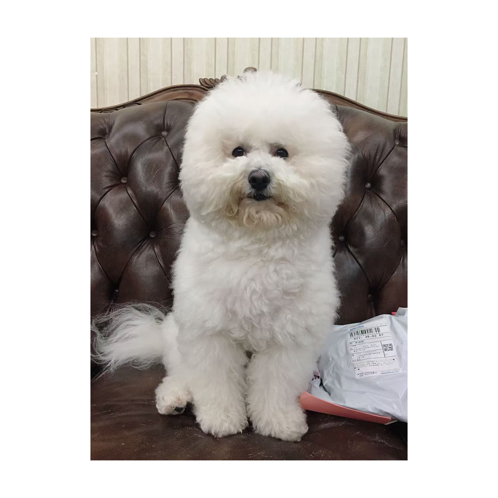
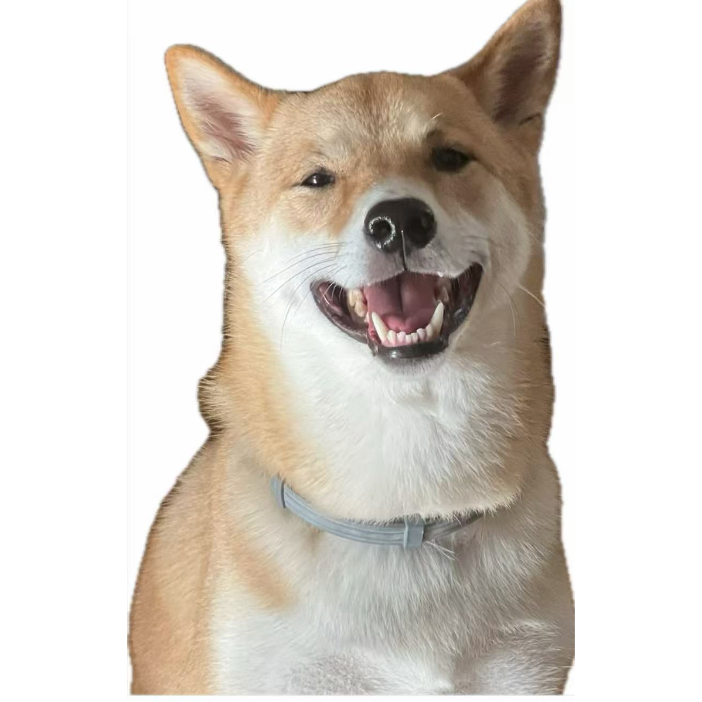
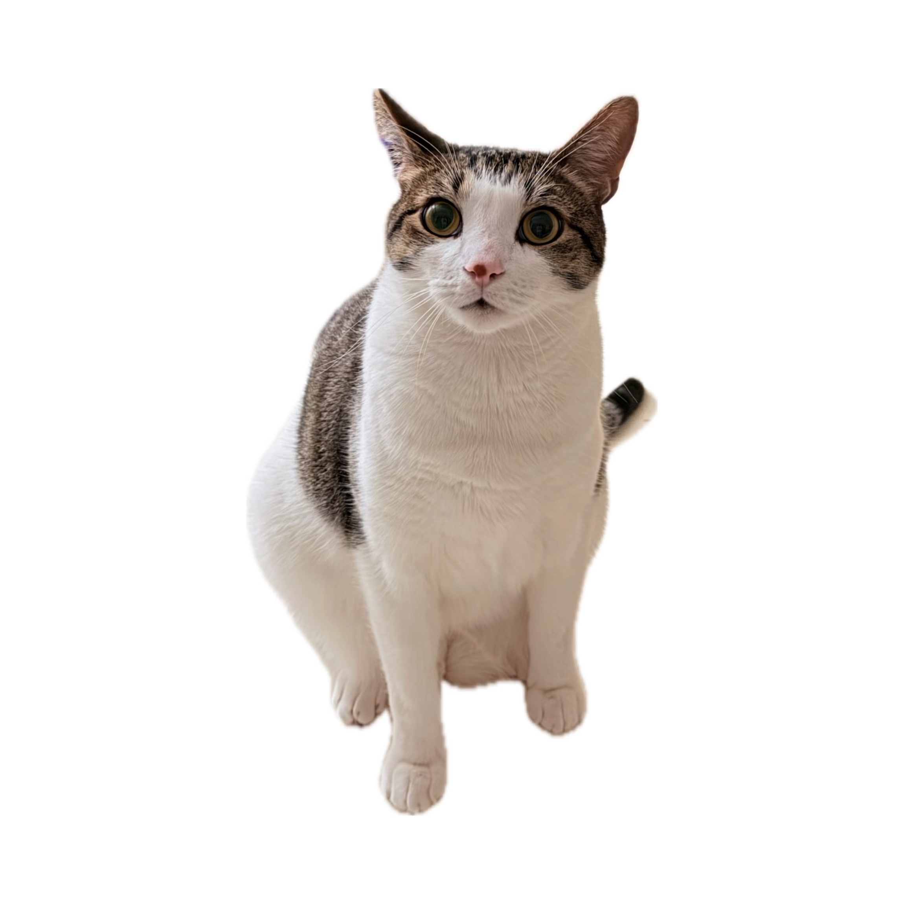
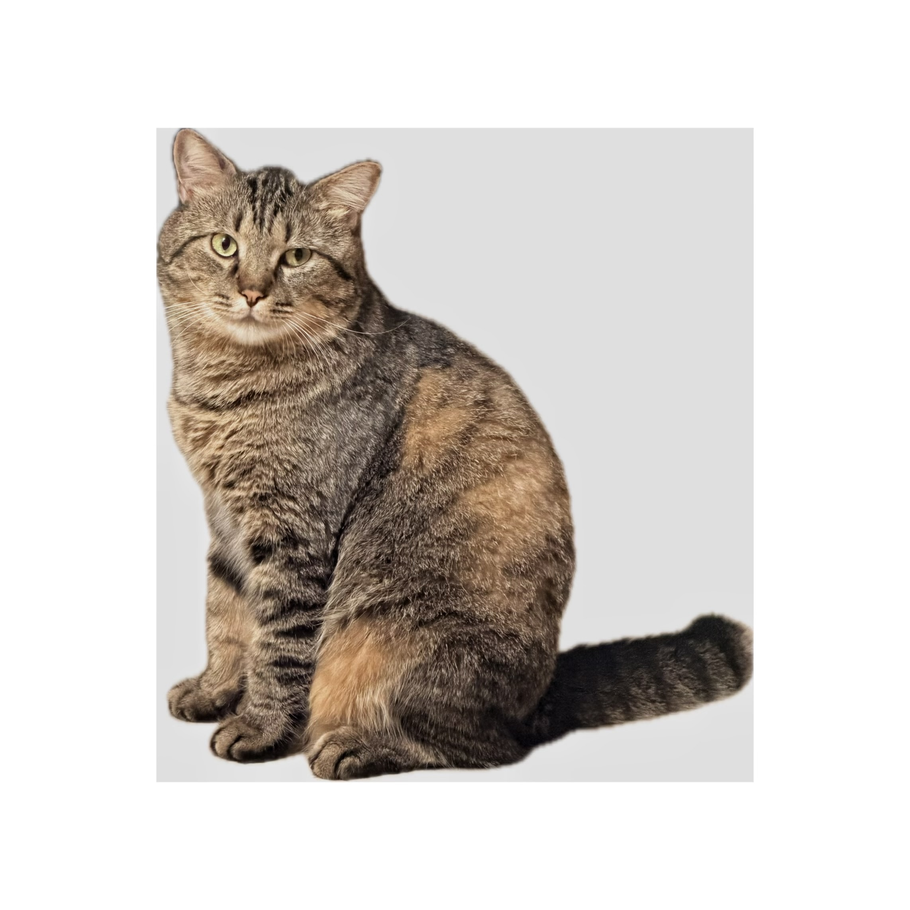
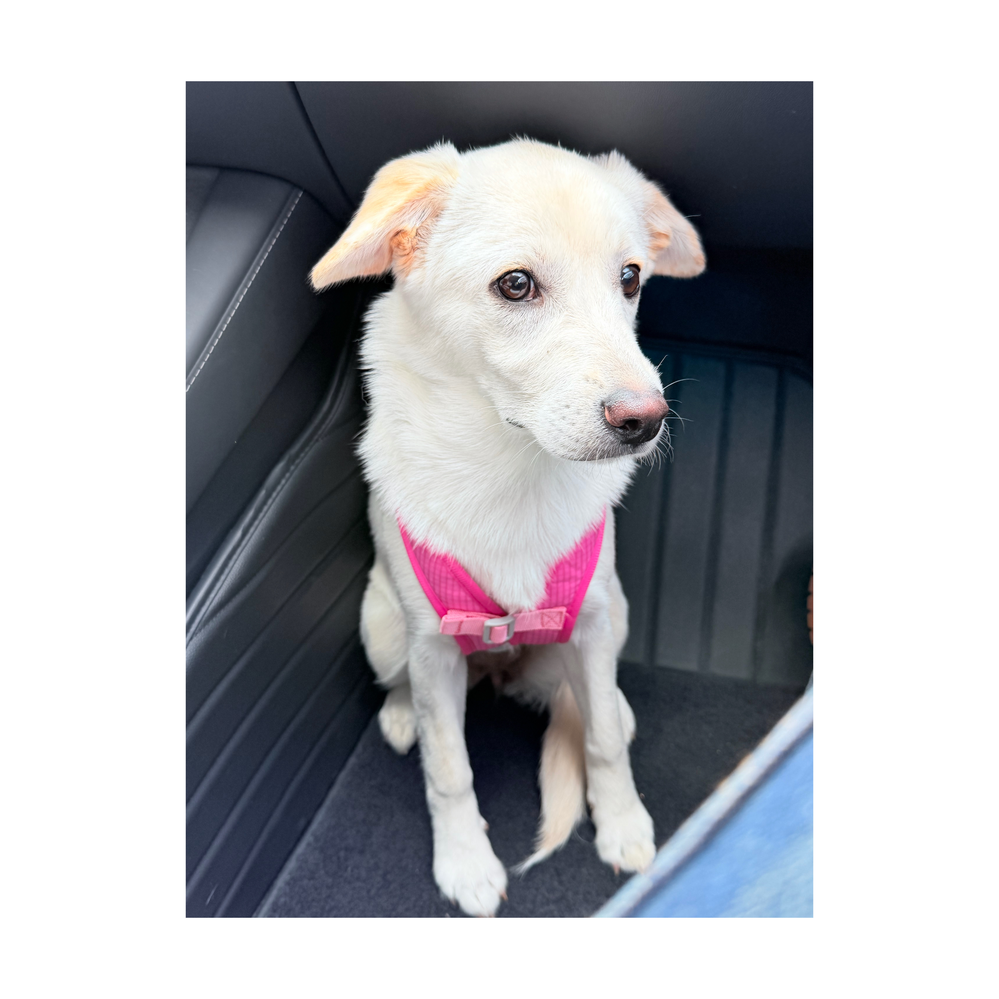

Meet my best friend
Mochi
BreedBichon Frise
Age11 years old
Personality
- Friendly
- Sleepy
- Loves Food

Meet my best friend
BreedBichon Frise
Age11 years old

Meet my best friend
BreedShiba Inu
Age5 years old

Meet my best friend
BreedDomestic Short Hair
Age3 years old

Meet my best friend
BreedDomestic Short Hair
Age2.5 years old

Meet my best friend
BreedMixed-breed Dog
Age1 year old